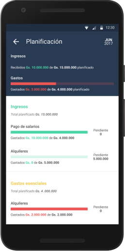

El asesor financiero que tus clientes
necesitan las 24 horas del dia.
Con el fin de impulsar la interacción entre los clientes con cuentas bancarias y las Instituciones financieras, nace la idea de crear una herramienta para ayudar a los bancos a enriquecer la experiencia de los clientes de banca digital, y de esta manera, reconstruir la relación de confianza entre dichas instituciones y los clientes, se convierte en una tarea un poco mas sencilla, teniendo en cuenta que estos últimos necesitan comprender su situación financiera, de manera a tomar decisiones mas precisas en el futuro, creamos la herramienta perfecta para ayudar a los Bancos a seguir siendo transparentes con sus clientes de una forma mas amigable.
|
TRANSACCIONES
Llevando al siguiente nivel la lista de transacciones de un usuario, establecemos esta lista como pantalla principal ayuda a visibilizar los gastos recientes, también filtrar y buscar gastos anteriores. |
|
|---|---|
|
CATEGORIZACION
Las transacciones contienen información que es útil para los controles del banco, pero muy poca información para el usuario, cuando estas transacciones pasan por el proceso de categorizacion, este les agrega información importante y relevante para el usuario, con las transacciones categorizadas, el usuario tiene acceso a reportes mensuales por categorías y estadísticas. |
|
|
ENRIQUECIMIENTO
Una vez categorizadas, las transacciones pasan por el proceso de enriquecimiento, este proceso agrega a las transacciones informacion adicional para que el usuario tenga un mejor entendimiento de su comportamiento. |
|
|
COMUNICACION EN TIEMPO REAL
Poder comunicar a sus clientes las promociones y alertas en tiempo real es una ventaja importante, y según la importancia del mensaje se pueden establecer notificaciones en dos niveles, una se asegura de que el usuario este informado al instante y la otra se muestra al usuario cuando ingresa a la aplicacion. |
|
|
PLANIFICACION
Para evitar pasar del presupuesto, sus clientes pueden establecer limites por categoria, y dependiendo del momento del mes, es alertado de acuerdo a su comportamiento. |
 |

|
METAS
Puede no ser conveniente para un cliente generar una deuda para lograr sus objetivos, con esta opción puede establecer el monto que necesita ahorrar y el tiempo que esta dispuesto a ahorrar para llegar. Durante ese proceso, la aplicación acompaña al cliente controlando sus gastos para poder cumplir con su meta. |